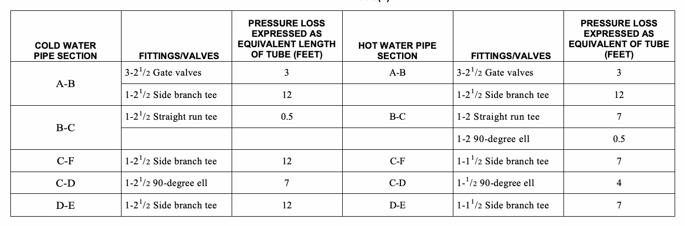
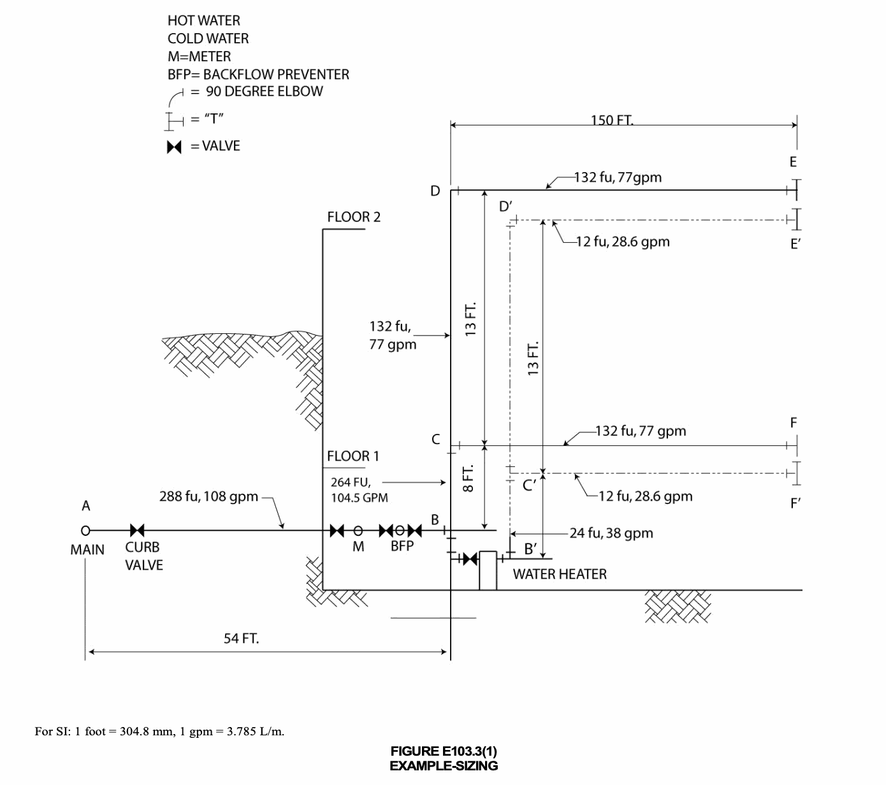
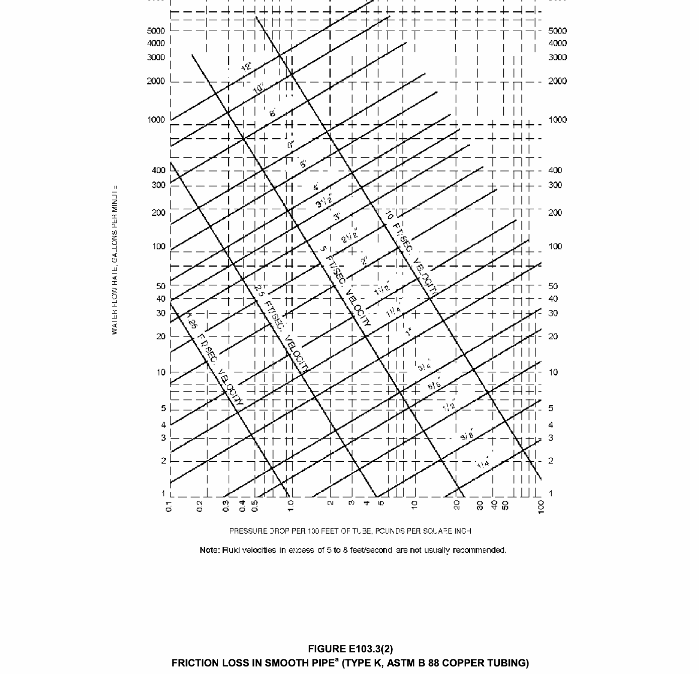
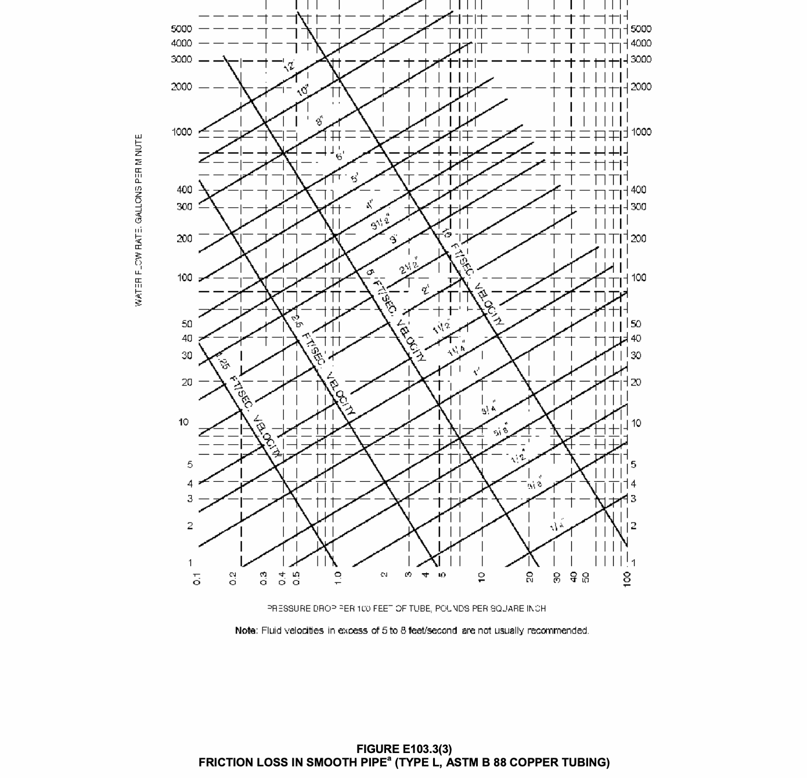
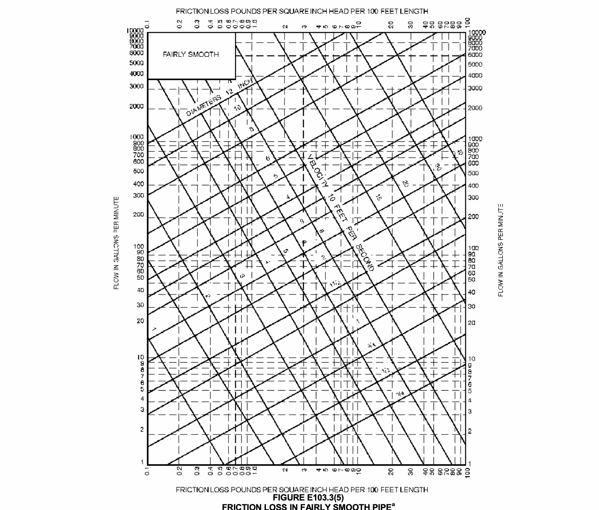
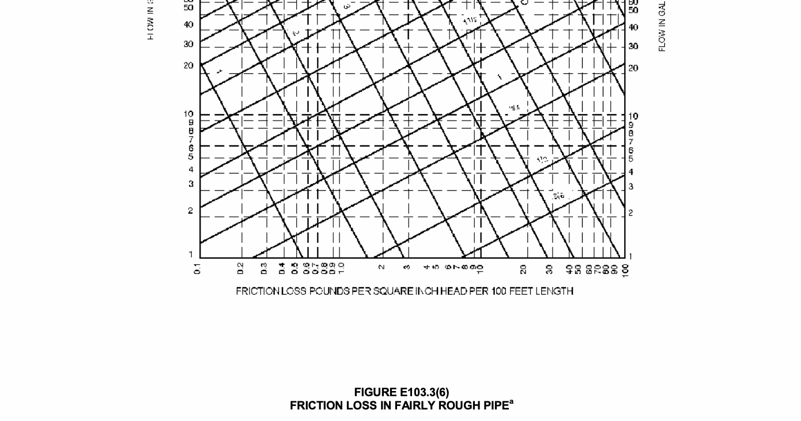
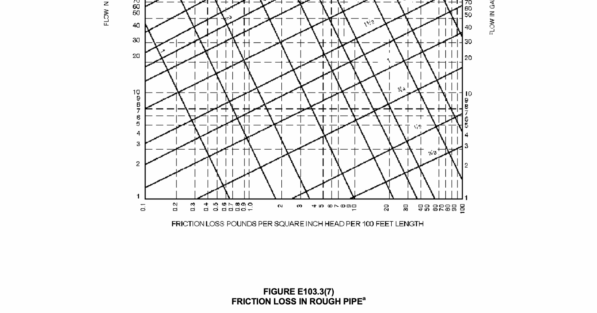
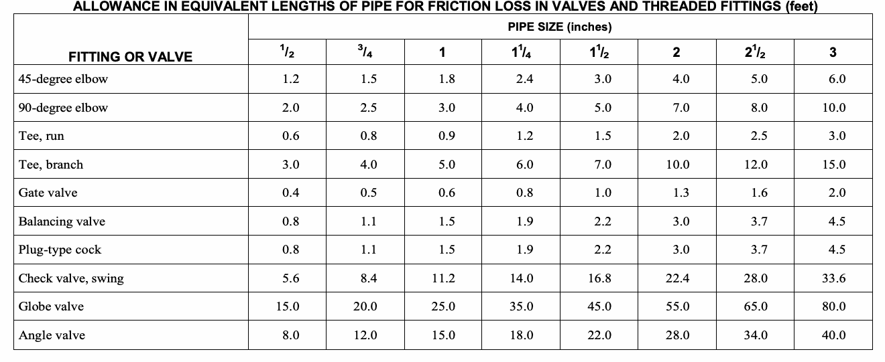
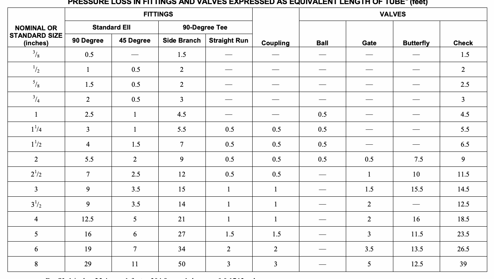

3). The design procedures are based on the minimum static pressure available from the supply source, the head changes in the system caused by friction and elevation, and the rates of flow necessary for operation of various fixtures.
Obtain the necessary information regarding the minimum daily static service pressure in the area where the building is to be located. If the building supply is to be metered, obtain information regarding friction loss relative to th e rate of flow for meters in the range of sizes likely to be used. Friction loss data can be obtained from most manufacturers of water meters.
corresponding demand from the applicable part of Table E103.3(3).
, and add the sum to the total demand for fixtures. The result is the estimated supply demand for the building supply.
Decide from Table 604.3 what is the desirable minimum residual pressure that should be maintained at the highest fixture in the supply system. If the highest group of fixtures contains flush valves, the pressure for the group should not be less than 15 psi (103.4 kPa) flowing. For flush tank supplies, the available pressure should not be less than 8 psi (55.2 kPa) flowing, except blowout action fixtures must not be less than 25 psi (172.4 kPa) flowing.
engineering practice and approved by the department. The sizes selected must not be less than the minimum required by this code.
exceed the minimum pressure available at the supply source. These pressures are as follows:
1. Pressure required at fixture to produce required flow. See Section 604.3 and Section 604.5.
2. Static pressure loss or gain (due to head) is computed at 0.433 psi per foot (9.8 kPa/m) of elevation change.
Example: Assume that the highest fixture supply outlet is 20 feet (6096 mm) above or below the supply source. This produces a static pressure differential of 8.66 psi (59.8 kPa) loss.
3. Loss through water meter. The friction or pressure loss can be obtained from meter manufacturers.
4. Loss through taps in water main.
5. Losses through special devices such as filters, softeners, backflow prevention devices and pressure regulators. These values must be obtained from the manufacturers.
6. Loss through valves and fittings. Losses for these items are calculated by converting to equivalent length of piping and adding to the total pipe length.
7. Loss due to pipe friction can be calculated when the pipe size, the pipe length and the flow through the pipe are known. With these three items, the friction loss can be determined using Figures E103.3(2), E103.3(3), E103.3(5), E103.3(6), and E103.3(7). For piping flow charts not included, use manufacturers’ tables and velocity recommendations.
Note: For the purposes of all examples, the following
metric conversions are applicable:
1 cubic foot per minute = 0.4719 L/s 1 square foot = 0.0929 m2 1 degree = 0.0175 rad
1 pound per square inch = 6.895 kPa 1 inch = 25.4 mm 1 foot = 304.8 mm
1 gallon per minute = 3.7 85 L/m
The size of water service mains, branch mains and risers by the segmented loss method, must be determined according to water supply demand gpm (L/m), available water pressure psi (kPa) and friction loss caused by the wat er meter and developed length of pipe feet (m), including equivalent length of fittings. This design procedure is based on the following parameters: Calculate the friction loss through each length of the pipe. Based on a system of pressure losses, the sum of which must not exceed the minimum pressure available at the street main or other source of supply.
Pipe sizing shall be based on (1) estimated peak demand, (2) total pressure losses caused by difference in elevation, equipme nt, developed length and pressure required at most remote fixture, (3) loss through taps in water main, (4) losses through fittings, filters, backflow prevention devices, valves and pipe friction.
Because of the variable conditions encountered in hydraulic design, it is impractical to specify definite and detailed rules for sizing of the water piping system. Current sizing methods do not address the differences in the probability of use and flow characteristics of fixtures between types of occupancies. Creating an exact model of predicting the demand for a building is impossible and final studies assessing the impact of water conservation on demand are not yet complete. The following steps are necessary for the segmented loss method.
1. Preliminary. Obtain the necessary information regarding the minimum daily static service pressure in the area where the building is to be located. If the building supply is to be metered, obtain information regarding friction loss relative to th e rate of flow for meters in the range of sizes to be used. Friction loss data can be obtained from manufacturers of water meters. It is essential that enough pressure be available to overcome all system losses caused by friction and elevation so that plumbin g fixtures operate properly. Section 604.6 requires the water distribution system to be designed for the minimum pressure available taking into consideration pressure fluctuations. The lowest pressure must be selected to guarantee a continuous, adequate supply of water. The lowest pressure in the public main usually occurs in the summer because of lawn sprinkling and supplying water for air-conditioning cooling towers. Future demands placed on the public main as a result of large growth or expansion should also be considered. The available pressure will decrease as additional loads are placed on the public system.
2. Demand load. Estimate the supply demand of the building main and the principal branches and risers of the system by totaling the corresponding demand from the applicable part of Table E103.3(3). When estimating peak demand sizing methods typically use water supply fixture units (see Table E103.3(2)). This numerical factor measures the load-producing effect of a single plumbing fixture of a given kind. The use of such fixture units can be applied to a single basic probabili ty curve (or table), found in the various sizing methods (Table E103.3(3)). The fixture units are then converted into gallons per minute (L/m) flow rate for estimating demand.
2.1. Estimate continuous supply demand in gallons per minute (L/m) for lawn sprinklers, air conditioners, etc., and add the sum to the total demand for fixtures. The result is the estimated supply demand for the building supply. Fixture units cannot be applied to constant use fixtures such as hose bibbs, lawn sprinklers and air conditioners.
These types of fixtures must be assigned the gallon per minute (L/m) value.
3. Selection of pipe size. This water pipe sizing procedure is based on a system of pressure requirements and losses, the sum of which must not exceed the minimum pressure available at the supply source. These pressures are as follows:
3.1. Pressure required at the fixture to produce required flow. See Section 604.3 and Section 604.5.
3.2. Static pressure loss or gain (due to head) is computed at 0.433 psi per foot (9.8 kPa/m) of elevation change.
3.3. Loss through a water meter. The friction or pressure loss can be obtained from the manufacturer.
3.4. Loss through taps in water main (see Table E103.3(4)).
3.5. Losses through special devices such as filters, softeners, backflow prevention devices and pressure regulators. These values must be obtained from the manufacturers.
3.6. Loss through valves and fittings. Losses for these items are calculated by converting to equivalent length of piping and adding to the total pipe length. [see Tables E103.3(5) and E103.3(6)].
3.7. Loss due to pipe friction can be calculated when the pipe size, the pipe length and the flow through the pipe are known. With these three items, the friction loss can be determined using Figures E103.3(2), E103.3(3), E103.3(5), E103.3(6), and E103.3(7). When using charts, use pipe inside diameters. For piping flow charts not included, use manufacturers’ tables and velocity recommendations. Before attempting to size any water supply system, it is neces-sary to gather preliminary information which includes available pressure, piping material, select design velocity, elevation differences and developed length to most remote fixture. The water supply system is divided into sections at major changes in elevation or where branches lead to fixture groups. The peak demand must be determined in each part of the hot and cold water supply system which includes the corresponding water supply fixture unit and conversion to gallons per minute (L/m) flow rate to be expected through each section. Sizing methods require the determination of the “most hydraulically remote” fixture to compute the pressure loss caused by pipe and fittings. The hydraulically remote fixture represents the most downstream fixture along the circuit of piping requiring the most available pressure to operate properly. Consideration must be given to all pressure demands and losses, such as friction caused by pipe, fittings and equipment, elevation and the residual pressure required by Table 604.3. The two most common and frequent complaints about the water supply system operation are lack of adequate pressure and noise.
Problem: What size Type L copper water pipe, service and distribution will be required to serve a two-story factory building having on each floor, back-to-back, two toilet rooms each equipped with hot and cold water? The highest fixture is 21 feet (6401 mm) above the street main, which is tapped with a 2-inch (51 mm) corporation cock at which point the minimum pressure is 55 psi (379.2 kPa). In the building basement, a 2-inch (51 mm) meter with a maximum pressure drop of 11 psi (75.8 kPa) and 3-inch (76 mm) reduced pressure principle backflow preventer with a maximum pressure drop of 9 psi (621 kPa) are to be installed. The system is shown by Figure E103.3(1). To be determined are the pipe sizes for the service main and the cold and hot water distribution pipes.
Solution: A tabular arrangement such as shown in Table E103.3(1) should first be constructed. The steps to be followed are indicated by the tabular arrangement itself as they are in sequence, columns 1 through 10 and lines A through L.
Step 1 Columns 1 and 2: Divide the system into sections breaking at major changes in elevation or where branches lead to fixture groups. After point B (see Figure E103.3(1)), separate consideration will be given to the hot and cold water piping. Enter the sections to be considered in the service and cold water piping in Column 1 of the tabular arrangement. Column 1 of Table E103.3(1) provides a line-by-line recommended tabular arrangement for use in solving pipe sizing.
The objective in designing the water supply system is to ensure an adequate water supply and pressure to all fixtures and equipment. Column 2 provides the pounds per square inch (psi) to be considered separately from the minimum pressure available at the main. Losses to take into consideration are the following: the differences in elevations between the water supply source and the highest water supply outlet, meter pressure losses, the tap in main loss, special fixture devices such as water softeners and prevention devices and the pressure required at the most remote fixture outlet. The difference in elevation can result in an increase or decrease in available pressure at the main. Where the water supply outlet is located above the source, this results in a loss in the available pressure and is subtracted from the pressure at the water source. Where the highest water supply outlet is located below the water supply source, there will be an increase in pressure that is added to the available pressure of the water source.
Column 3: According to Table E103.3(3), determine the gpm (L/m) of flow to be expected in each section of the system. These flows range from 28.6 to 108 gpm. Load values for fixtures must be determined as water supply fixture units and then converted to a gallon-per-minute (gpm) rating to determine peak demand. When calculating peak demands, the water supply fixture units are added and then converted to the gallon-per-minute rating. For continuous flow fixtures such as hose bibbs and lawn sprinkler systems, add the gallon-per-minute demand to the intermittent demand of fixtures. For example, a total of 120 water supply fixture units is converted to a demand of 48 gallons per minute. Two hose bibbs x 5 gpm demand = 10 gpm. Total gpm rating = 48.0 gpm + 10 gpm = 58.0 gpm demand.
Step 2 Line A: Enter the minimum pressure available at the main source of supply in Column 2. This is 55 psi (379.2 kPa). The local water authorities generally keep records of pressures at different times of day and year. The available pressure can also be checked from nearby buildings or from fire department hydrant checks.
Line B: Determine from Table 604.3 the highest pressure required for the fixtures on the system, which is 15 psi (103.4 kPa), to operate a flushometer valve. The most remote fixture outlet is necessary to compute the pressure loss caused by pipe and fittings, and represents the most downstream fixture along the circuit of piping requiring the available pressure to operate properly as indicated by Table 604.3.
Line C: Determine the pressure loss for the meter size given or assumed. The total water flow from the main through the service as determined in Step 1 will serve to aid in the meter selected. There are three common types of water meters; the pressure losses are determined by the American Water Works Association Standards for displacement type, compound type and turbine type. The maximum pressure loss of such devices takes into consideration the meter size, safe operating capacity (gpm) and maximum rates for continuous operations (gpm). Typically, equipment imparts greater pressure losses than piping.
Line D: Select from Table E103.3(4) and enter the pressure loss for the tap size given or assumed. The loss of pressure through taps and tees in pounds per square inch (psi) are based on the total gallon-per-minute flow rate and size of the tap.
Line E: Determine the difference in elevation between the main and source of supply and the highest fixture on the system. Multiply this figure, expressed in feet, by 0.43 psi (2.9 kPa). Enter the resulting psi loss on Line E. The difference in elevation between the water supply source and the highest water supply outlet has a significant impact on the sizing of the water supply system. The difference in elevation usually results in a loss in the available pressure because the water supply outlet is generally located above the water supply source. The loss is caused by the pressure required to lift the water to the outlet. The pressure loss is subtracted from the pressure at the water source. Where the highest water supply outlet is located below the water source, there will be an increase in pressure which is added to the available pressure of the water source.
Lines F, G and H: The pressure losses through filters, backflow prevention devices or other special fixtures must be obtained from the manufacturer or estimated and entered on these lines. Equipment such as backflow prevention devices, check valves, water softeners, instantaneous or tankless water heaters, filters and strainers can impart a much greater pressure loss than the piping. The pressure losses can range from 8 psi to 30 psi.
Step 3 Line I: The sum of the pressure requirements and losses that affect the overall system (Lines B through H) is entered on this line. Summarizing the steps, all of the system losses are subtracted from the minimum water pressure. The remainder is the pressure available for friction, defined as the energy available to push the water through the pipes to each fixture. This force can be used as an average pressure loss, as long as the pressure available for friction is not exceeded. Saving a certain amount for available water supply pressures as an area incurs growth, or because of aging of the pipe or equipment added to the system is recommended.
Step 4 Line J: Subtract Line I from Line A. This gives the pressure that remains available from overcoming friction losses in the system. This figure is a guide to the pipe size that is chosen for each section, incorporating the total friction losses to the most remote outlet (measured length is called developed length).
Exception: When the main is above the highest fixture, the resulting psi must be considered a pressure gain (static head gain) and omitted from the sums of Lines B through H and added to Line J.
The maximum friction head loss that can be tolerated in the system during peak demand is the difference between the static pressure at the highest and most remote outlet at no-flow conditions and the minimum flow pressure required at that outlet. If the losses are within the required limits, then every run of pipe will also be within the required friction head loss. Static pressure loss is the most remote outlet in feet × 0.43 3 = loss in psi caused by elevation differences.
Step 5 Column 4: Enter the length of each section from the main to the most remote outlet (at Point E). Divide the water supply system into sections breaking at major changes in elevation or where branches lead to fixture groups.
Step 6 Column 5: When selecting a trial pipe size, the length from the water service or meter to the most remote fixture outlet must be measured to determine the developed length. However, in systems having a flush valve or temperature controlled shower at the top most floors the developed length would be from the water meter to the most remote flush valve on the system. A rule of thumb is that size will become progressively smaller as the system extends farther from the main source of supply. Trial pipe size may be arrived at by the following formula:
Line J (Pressure available to overcome pipe friction) × 100/equivalent length of run total developed length to most remote fixture × percentage factor of 1.5 (note: a percentage factor is used only as an estimate for friction losses imposed for fittings for initial trial pipe size) = psi (average pressure drops per 100 feet of pipe). For trial pipe size see Figure E 103.3(3) (Type L copper) based on 2.77 psi and a 108 gpm = 21/2 inches. To determine the equivalent length of run to the most remote outlet, the developed length is determined and added to the friction losses for fittings and valves. The developed lengths of the designated pipe sections are as follows: A – B 54 feet B – C 8 feet C – D 13 feet D – E 150 feet
Total developed length = 225 feet
The equivalent length of the friction loss in fittings and valves must be added to the developed length (most remote outlet). Where the size of fittings and valves is not known, the added friction loss should be approximated. A general rule that has been used is to add 50 percent of the developed length to allow for fittings and valves. For example, the equivalent length of run equals the developed length of run (225 ft × 1.5 = 338 feet). The total equivalent length of run for determining a trial pipe size is 338 feet.
Example: 9.36 (pressure available to overcome pipe friction) × 100/ 338 (Equivalent length of run = 225 × 1.5) = 2.77 psi (average pressure drop per 100 feet of pipe). Step 7 Column 6: Select from Table E103.3(6) the equivalent lengths for the trial pipe size of fittings and valves on each pipe section. Enter the sum for each section in Column 6. (The number of fittings to be used in this example must be an estimate.) The equivalent length of piping is the developed length plus the equivalent lengths of pipe corresponding to friction head losses for fittings and valves. Where the size of fittings and valves is not known, the added friction head losses must be approximated. An estimate for this example is as found in Example E103.3(1).
Step 8 Column 7: Add the figures from Column 4 and Column 6, and enter in Column 7. Express the sum in hundreds of feet. EXAMPLE E103.3(1)
Step 9 Column 8: Select from Figure E103.3(3) the friction loss per 100 feet (30 480 mm) of pipe for the gallon-per-minute flow in a section (Column 3) and trial pipe size (Column 5). Maximum friction head loss per 100 feet is determined on the basis of total pressure available for friction head loss and the longest equivalent length of run. The selection is based on the gallon-per-minute demand, the uniform friction head loss, and the maximum design velocity. Where the size indicated by hydraulic table indicates a velocity in excess of the selected velocity, a size must be selected which produces the required velocity.
Step 10 Column 9: Multiply the figures in Columns 7 and 8 for each section and enter in Column 9.
Total friction loss is determined by multiplying the friction loss per 100 feet (30 480 mm) for each pipe section in the total developed length by the pressure loss in fittings expressed as equivalent length in feet. Note: section C-F should be considered in the total pipe friction losses only if greater loss occurs in section C-F than in pipe section D-E. section C-F is not considered in the total developed length. Total friction loss in equivalent length is determined in Example E103.3(2).
Step 11 Line K: Enter the sum of the values in Column 9. The value is the total friction loss in equivalent length for each designated pipe section.
Step 12 Line L: Subtract Line J from Line K and enter in Column 10.
The result should always be a positive or plus figure. If it is not, repeat the operation using Columns 5, 6, 8 and 9 until a balance or near balance is obtained. If the difference between Lines J and K is a high positive number, it is an indication that the pipe sizes are too large and should be reduced, thus saving materials. In such a case, the operations using Columns 5, 6, 8 and 9 should again be repeated.
The total friction losses are determined and subtracted from the pressure available to overcome pipe friction for trial pipe size. This number is critical as it provides a guide to whether the pipe size selected is too large and the process should be repeated to obtain an economically designed system.
Answer: The final figures entered in Column 5 become the design pipe size for the respective sections. Repeating this operation a second time using the same sketch but considering the demand for hot water, it is possible to size the hot water distribution piping. This has been worked up as a part of the overall problem in the tabular arrangement used for sizing the service and water distribution piping. Note that consideration must be given to the pressure losses from the street main to the water heater (section A-B) in determining the hot water pipe sizes. EXAMPLE E103.3(2)
FRICTION LOSS EQUIVALENT LENGTH (feet)
Cold Water Hot Water PIPE SECTIONS A-B 0.69 × 3.2 = 2.21 0.69 × 3.2 = 2.21
B-C 0.085 × 3.1 = 0.26 0.16 × 1.4 = 0.22
C-D 0.20 × 1.9 = 0.38 0.17 × 3.2 = 0.54
D-E 1.62 × 1.9 = 3.08 1.57 × 3.2 = 5.02
Total pipe friction losses 5.93 7.99 (Line K)
For SI: 1 foot = 304.8 mm, 1 gpm = 3.785 L/m. FRICTION LOSS IN SMOOTH PIPEa (TYPE K, ASTM B 88 COPPER TUBING)
For SI: 1 inch = 25.4 mm, 1 foot = 304.8 mm, 1 gpm = 3.785 L/m, 1 psi = 6.895 kPa, 1 foot per second = 0.305 m/s.
a. This chart applies to smooth new copper tubing with recessed (streamline) soldered joints and to the actual sizes of types indicated on the diagram. FRICTION LOSS IN SMOOTH PIPEa (TYPE L, ASTM B 88 COPPER TUBING)
For SI: 1 inch = 25.4 mm, 1 foot = 304.8 mm, 1 gpm = 3.785 L/m, 1 psi = 6.895 kPa, 1 foot per second = 0.305 m/s.
a. This chart applies to smooth new copper tubing with recessed (streamline) soldered joints and to the actual sizes of types indicated on the diagram. FRICTION LOSS IN FAIRLY SMOOTH PIPEa
For SI: 1 inch = 25.4 mm, 1 foot = 304.8 mm, 1 gpm = 3.785 L/m, 1 psi = 6.895 kPa, 1 foot per second = 0.305 m/s.
a. This chart applies to smooth new steel (fairly smooth) pipe and to actual diameters of standard-weight pipe. FRICTION LOSS IN FAIRLY ROUGH PIPEa
For SI: 1 inch = 25.4 mm, 1 foot = 304.8 mm, 1 gpm = 3.785 L/m, 1 psi = 6.895 kPa, 1 foot per second = 0.305 m/s.
a. This chart applies to fairly rough pipe and to actual diameters which in general will be less than the actual diameters of the new pipe of the same kind. FRICTION LOSS IN ROUGH PIPEa
For SI: 1 inch = 25.4 mm, 1 foot = 304.8 mm, 1 gpm = 3.785 L/m, 1 psi = 6.895 kPa, 1 foot per second = 0.305 m/s.
a. This chart applies to very rough pipe and existing pipe and to their actual diameters. TABLE E103.3(3)
(continued)







| FIXTURE | OCCUPANCY | TYPE OF SUPPLY CONTROL | LOAD VALUES, IN WATER SUPPLY FIXTURE UNITS (wsfu) | ||
|---|---|---|---|---|---|
| Cold | Hot | Total | |||
| Bathroom group | Private | Flush tank | 2.7 | 1.5 | 3.6 |
| Bathroom group | Private | Flush valve | 6.0 | 3.0 | 8.0 |
| Bathtub | Private | Faucet | 1.0 | 1.0 | 1.4 |
| Bathtub | Public | Faucet | 3.0 | 3.0 | 4.0 |
| Bidet | Private | Faucet | 1.5 | 1.5 | 2.0 |
| Combination fixture | Private | Faucet | 2.25 | 2.25 | 3.0 |
| Dishwashing machine | Private | Automatic | — | 1.4 | 1.4 |
| Drinking fountain | Offices, etc. | 3/ "valve 8 | 0.25 | — | 0.25 |
| Kitchen sink | Private | Faucet | 1.0 | 1.0 | 1.4 |
| Kitchen sink | Hotel, restaurant | Faucet | 3.0 | 3.0 | 4.0 |
| Laundry trays (1 to 3) | Private | Faucet | 1.0 | 1.0 | 1.4 |
| Lavatory | Private | Faucet | 0.5 | 0.5 | 0.7 |
| Lavatory | Public | Faucet | 1.5 | 1.5 | 2.0 |
| Service sink | Offices, etc. | Faucet | 2.25 | 2.25 | 3.0 |
| Shower head | Public | Mixing valve | 3.0 | 3.0 | 4.0 |
| Shower head | Private | Mixing valve | 1.0 | 1.0 | 1.4 |
| Urinal | Public | 1"flush valve | 10.0 | — | 10.0 |
| Urinal | Public | 3/ " flush valve 4 | 5.0 | — | 5.0 |
| Urinal | Public | Flush tank | 3.0 | — | 3.0 |
| Washing machine (8 lb) | Private | Automatic | 1.0 | 1.0 | 1.4 |
| Washing machine (8 lb) | Public | Automatic | 2.25 | 2.25 | 3.0 |
| Washing machine (15 lb) | Public | Automatic | 3.0 | 3.0 | 4.0 |
| Water closet | Private | Flush valve | 6.0 | — | 6.0 |
| Water closet | Private | Flush tank | 2.2 | — | 2.2 |
| Water closet | Public | Flush valve | 10.0 | — | 10.0 |
| Water closet | Public | Flush tank | 5.0 | — | 5.0 |
| Water closet | Public or private | Flushometer tank | 2.0 | — | 2.0 |
For SI: 1 inch = 25.4 mm, 1 pound = 0.454 kg.
a. For fixtures not listed, loads should be assumed by comparing the fixture to one listed using water in similar quantities and at similar rates. The assigned loads for fixtures with both hot and cold water supplies are given for separate hot and cold water loads and for total load. The separate hot and cold water loads being three-fourths of the total load for the fixture in each case.
| SUPPLY SYSTEMS PREDOMINANTLY FOR FLUSH TANKS | SUPPLY SYSTEMS PREDOMINANTLY FOR FLUSH VALVES | ||||
|---|---|---|---|---|---|
| Load | Demand | Load | Demand | ||
| (Water supply fixture units) | (Gallons per minute) | (Cubic feet per minute) | (Water supply fixture units) | (Gallons per minute) | (Cubic feet per minute) |
| 1 | 3.0 | 0.04104 | — | — | — |
| 2 | 5.0 | 0.0684 | — | — | — |
| 3 | 6.5 | 0.86892 | — | — | — |
| 4 | 8.0 | 1.06944 | — | — | — |
| 5 | 9.4 | 1.256592 | 5 | 15.0 | 2.0052 |
| 6 | 10.7 | 1.430376 | 6 | 17.4 | 2.326032 |
| 7 | 11.8 | 1.577424 | 7 | 19.8 | 2.646364 |
| 8 | 12.8 | 1.711104 | 8 | 22.2 | 2.967696 |
| 9 | 13.7 | 1.831416 | 9 | 24.6 | 3.288528 |
| 10 | 14.6 | 1.951728 | 10 | 27.0 | 3.60936 |
| 11 | 15.4 | 2.058672 | 11 | 27.8 | 3.716304 |
| 12 | 16.0 | 2.13888 | 12 | 28.6 | 3.823248 |
| 13 | 16.5 | 2.20572 | 13 | 29.4 | 3.930192 |
| 14 | 17.0 | 2.27256 | 14 | 30.2 | 4.037136 |
| 15 | 17.5 | 2.3394 | 15 | 31.0 | 4.14408 |
| 16 | 18.0 | 2.90624 | 16 | 31.8 | 4.241024 |
| 17 | 18.4 | 2.459712 | 17 | 32.6 | 4.357968 |
| 18 | 18.8 | 2.513184 | 18 | 33.4 | 4.464912 |
| 19 | 19.2 | 2.566656 | 19 | 34.2 | 4.571856 |
| 20 | 19.6 | 2.620128 | 20 | 35.0 | 4.6788 |
| 25 | 21.5 | 2.87412 | 25 | 38.0 | 5.07984 |
| 30 | 23.3 | 3.114744 | 30 | 42.0 | 5.61356 |
| 35 | 24.9 | 3.328632 | 35 | 44.0 | 5.88192 |
| 40 | 26.3 | 3.515784 | 40 | 46.0 | 6.14928 |
| 45 | 27.7 | 3.702936 | 45 | 48.0 | 6.41664 |
| 50 | 29.1 | 3.890088 | 50 | 50.0 | 6.684 |
| 60 | 32.0 | 4.27776 | 60 | 54.0 | 7.21872 |
| 70 | 35.0 | 4.6788 | 70 | 58.0 | 7.75344 |
| 80 | 38.0 | 5.07984 | 80 | 61.2 | 8.181216 |
| 90 | 41.0 | 5.48088 | 90 | 64.3 | 8.595624 |
| 100 | 43.5 | 5.81508 | 100 | 67.5 | 9.0234 |
| 120 | 48.0 | 6.41664 | 120 | 73.0 | 9.75864 |
| 140 | 52.5 | 7.0182 | 140 | 77.0 | 10.29336 |
| 160 | 57.0 | 7.61976 | 160 | 81.0 | 10.82808 |
| 180 | 61.0 | 8.15448 | 180 | 85.5 | 11.42964 |
| 200 | 65.0 | 8.6892 | 200 | 90.0 | 12.0312 |
| 225 | 70.0 | 9.3576 | 225 | 95.5 | 12.76644 |
| 250 | 75.0 | 10.026 | 250 | 101.0 | 13.50168 |
| 275 | 80.0 | 10.6944 | 275 | 104.5 | 13.96956 |
| 300 | 85.0 | 11.3628 | 300 | 108.0 | 14.43744 |
| 400 | 105.0 | 14.0364 | 400 | 127.0 | 16.97736 |
| 500 | 124.0 | 16.57632 | 500 | 143.0 | 19.11624 |
| 750 | 170.0 | 22.7256 | 750 | 177.0 | 23.66136 |
| 1,000 | 208.0 | 27.80544 | 1,000 | 208.0 | 27.80544 |
| 1,250 | 239.0 | 31.94952 | 1,250 | 239.0 | 31.94952 |
| 1,500 | 269.0 | 35.95992 | 1,500 | 269.0 | 35.95992 |
| 1,750 | 297.0 | 39.70296 | 1,750 | 297.0 | 39.70296 |
| 2,000 | 325.0 | 43.446 | 2,000 | 325.0 | 43.446 |
| 2,500 | 380.0 | 50.7984 | 2,500 | 380.0 | 50.7984 |
| 3,000 | 433.0 | 57.88344 | 3,000 | 433.0 | 57.88344 |
| 4,000 | 535.0 | 70.182 | 4,000 | 525.0 | 70.182 |
| 5,000 | 593.0 | 79.27224 | 5,000 | 593.0 | 79.27224 |
| GALLONS PER MINUTE | SIZE OF TAP OR TEE (inches) | ||||||
|---|---|---|---|---|---|---|---|
| 5/8 | 3/4 | 1 | 11/ 4 | 11/ 2 | 2 | 3 | |
| 10 | 1.35 | 0.64 | 0.18 | 0.08 | — | — | — |
| 20 | 5.38 | 2.54 | 0.77 | 0.31 | 0.14 | — | — |
| 30 | 12.10 | 5.72 | 1.62 | 0.69 | 0.33 | 0.10 | — |
| 40 | — | 10.20 | 3.07 | 1.23 | 0.58 | 0.18 | — |
| 50 | — | 15.90 | 4.49 | 1.92 | 0.91 | 0.28 | — |
| 60 | — | — | 6.46 | 2.76 | 1.31 | 0.40 | — |
| 70 | — | — | 8.79 | 3.76 | 1.78 | 0.55 | 0.10 |
| 80 | — | — | 11.50 | 4.90 | 2.32 | 0.72 | 0.13 |
| 90 | — | — | 14.50 | 6.21 | 2.94 | 0.91 | 0.16 |
| 100 | — | — | 17.94 | 7.67 | 3.63 | 1.12 | 0.21 |
| 120 | — | — | 25.80 | 11.00 | 5.23 | 1.61 | 0.30 |
| 140 | — | — | 35.20 | 15.00 | 7.12 | 2.20 | 0.41 |
| 150 | — | — | — | 17.20 | 8.16 | 2.52 | 0.47 |
| 160 | — | — | — | 19.60 | 9.30 | 2.92 | 0.54 |
| 180 | — | — | — | 24.80 | 11.80 | 3.62 | 0.68 |
| 200 | — | — | — | 30.70 | 14.50 | 4.48 | 0.84 |
| 225 | — | — | — | 38.80 | 18.40 | 5.60 | 1.06 |
| 250 | — | — | — | 47.90 | 22.70 | 7.00 | 1.31 |
| 275 | — | — | — | — | 27.40 | 7.70 | 1.59 |
| 300 | — | — | — | — | 32.60 | 10.10 | 1.88 |
For SI: 1 inch = 25.4 mm, 1 pound per square inch = 6.895kpa, 1 gallon per minute = 3.785 L/m. TABLE E103.3(5) ALLOWANCE IN EQUIVALENT LENGTHS OF PIPE FOR FRICTION LOSS IN VALVES AND THREADED FITTINGS (feet) PIPE SIZE (inches) FITTING OR VALVE 1/2 3/4 1 11/4 11/2 2 21/2 3 45-degree elbow 1.2 1.5 1.8 2.4 3.0 4.0 5.0 6.0 90-degree elbow 2.0 2.5 3.0 4.0 5.0 7.0 8.0 10.0 Tee, run 0.6 0.8 0.9 1.2 1.5 2.0 2.5 3.0 Tee, branch 3.0 4.0 5.0 6.0 7.0 10.0 12.0 15.0 Gate valve 0.4 0.5 0.6 0.8 1.0 1.3 1.6 2.0 Balancing valve 0.8 1.1 1.5 1.9 2.2 3.0 3.7 4.5 Plug-type cock 0.8 1.1 1.5 1.9 2.2 3.0 3.7 4.5 Check valve, swing 5.6 8.4 11.2 14.0 16.8 22.4 28.0 33.6 Globe valve 15.0 20.0 25.0 35.0 45.0 55.0 65.0 80.0 Angle valve 8.0 12.0 15.0 18.0 22.0 28.0 34.0 40.0
For SI: 1 inch = 25.4 mm, 1 foot = 304.8 mm, 1 degree = 0.0175 rad.


Where required for engineering design purposes, Table E202.1 shall be used to determine the approximate internal volume of water distribution piping.
| OUNCES OF WATER PER FOOT OF TUBE | |||
|---|---|---|---|
| Size Nominal, Inch | Copper Type M | Copper Type L | Copper Type K |
| 3/8 | 1.06 | 0.97 | 0.84 |
| 1/2 | 1.69 | 1.55 | 1.45 |
| 3/4 | 3.43 | 3.22 | 2.90 |
| 1 | 5.81 | 5.49 | 5.17 |
| 11/4 | 8.70 | 8.36 | 8.09 |
| 11/2 | 12.18 | 11.83 | 11.45 |
| 2 | 21.08 | 20.58 | 20.04 |
For SI: 1 ounce = 0.030 liter.